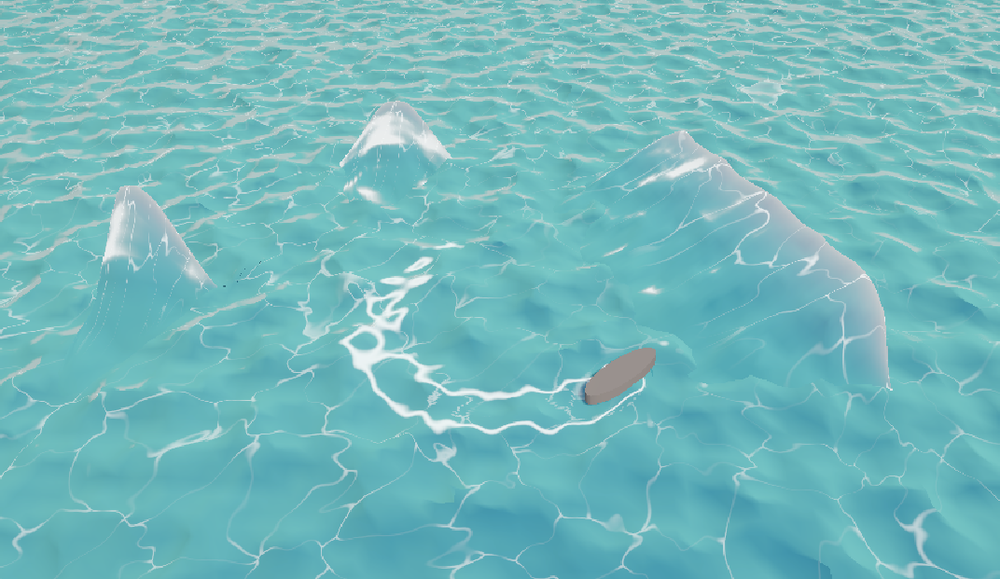

Instead of sampling time as a third noise axis, I rotate each 2D grid gradient continuously. This keeps the surface spatially coherent while making the motion feel like flow rather than a pattern being replaced.
UNITY URP · HLSL · PROCEDURAL WATERWAVE
WAVE
SIMULATOR
A real-time water-surface study built with custom HLSL, procedural vertex displacement, layered noise, and interactive geometry controls.

FROM NOISE TO A READABLE WATER SURFACE.
When the noise frequency became finer than the mesh, regular moiré patterns appeared. I warped the sampling domain with a lower-frequency noise layer to break that alignment without introducing discontinuities.
I compared neighboring heights with finite differences and built the surface normal from the resulting gradient. This made lighting follow the procedural surface instead of relying on a faceted screen-space approximation.
Voronoi caustics, edge highlights, scatter, whitecaps, and trail interaction are driven by exposed parameters and shared flow timing. The result is a material that can be tuned in-engine instead of a fixed animation.